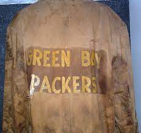
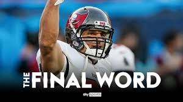

INTRO
IMAGES
YOUTUBE
FANTASY
 The Super Bowl is the annual final playoff game of the National Football League (NFL) to determine the league champion. It has served as the final game of every NFL season since 1966, replacing the NFL Championship Game. Since 2022, the game is played on the second Sunday in February. Prior Super Bowls were played on Sundays in early to mid-January from 1967 to 1978, late January from 1979 to 2003,[a] and the first Sunday of February from 2004 to 2021. Winning teams are awarded the Vince Lombardi Trophy, named for the coach of the Green Bay Packers who won the first two Super Bowls. Due to the NFL restricting use of its "Super Bowl" trademark, it is frequently referred to as the "big game" or other generic terms by non-sponsoring corporations. The day the game is played is often referred to as "Super Bowl Sunday" or simply "Super Sunday".
The Super Bowl is the annual final playoff game of the National Football League (NFL) to determine the league champion. It has served as the final game of every NFL season since 1966, replacing the NFL Championship Game. Since 2022, the game is played on the second Sunday in February. Prior Super Bowls were played on Sundays in early to mid-January from 1967 to 1978, late January from 1979 to 2003,[a] and the first Sunday of February from 2004 to 2021. Winning teams are awarded the Vince Lombardi Trophy, named for the coach of the Green Bay Packers who won the first two Super Bowls. Due to the NFL restricting use of its "Super Bowl" trademark, it is frequently referred to as the "big game" or other generic terms by non-sponsoring corporations. The day the game is played is often referred to as "Super Bowl Sunday" or simply "Super Sunday".
 For four decades after its 1920 conceptionNFL successfully fended off several rival leagues. In 1960, the NFL encountered its most serious competitor when the American Football League (AFL) was formed. The AFL vied with the NFL for players and fans. The original "bowl game" was the Rose Bowl Game in Pasadena, California, which was first played in 1902 as the "Tournament East–West football game" as part of the Pasadena Tournament of Roses and moved to the new Rose Bowl Stadium in 1923. The stadium got its name from the fact that the game played there was part of the Tournament of Roses and that it was shaped like a bowl, much like the Yale Bowl in New Haven, Connecticut. The Tournament of Roses football game eventually came to be known as the Rose Bowl Game. Exploiting the Rose Bowl Game's popularity, post-season college football contests were created for Miami (the Orange Bowl), New Orleans (the Sugar Bowl), and El Paso (the Sun Bowl) in 1935, and for Dallas (the Cotton Bowl) in 1937. By the time the first Super Bowl was played, the term "bowl" for any major American football game was well established.
The Packers defeated the Chiefs in the first AFL–NFL Championship Game, Super Bowl I.
After the American Football League's inaugural season, AFL commissioner Joe Foss sent an invitation to the NFL on January 14, 1961, to schedule a "World Playoff" game between the two leagues' champions, beginning with the upcoming 1961 season on the 15th of July .[4] The first World Playoff game would have, if actually played, matched up the Houston Oilers vs. the Green Bay Packers. It took a half-dozen more seasons for this idea to become a reality.
For four decades after its 1920 conceptionNFL successfully fended off several rival leagues. In 1960, the NFL encountered its most serious competitor when the American Football League (AFL) was formed. The AFL vied with the NFL for players and fans. The original "bowl game" was the Rose Bowl Game in Pasadena, California, which was first played in 1902 as the "Tournament East–West football game" as part of the Pasadena Tournament of Roses and moved to the new Rose Bowl Stadium in 1923. The stadium got its name from the fact that the game played there was part of the Tournament of Roses and that it was shaped like a bowl, much like the Yale Bowl in New Haven, Connecticut. The Tournament of Roses football game eventually came to be known as the Rose Bowl Game. Exploiting the Rose Bowl Game's popularity, post-season college football contests were created for Miami (the Orange Bowl), New Orleans (the Sugar Bowl), and El Paso (the Sun Bowl) in 1935, and for Dallas (the Cotton Bowl) in 1937. By the time the first Super Bowl was played, the term "bowl" for any major American football game was well established.
The Packers defeated the Chiefs in the first AFL–NFL Championship Game, Super Bowl I.
After the American Football League's inaugural season, AFL commissioner Joe Foss sent an invitation to the NFL on January 14, 1961, to schedule a "World Playoff" game between the two leagues' champions, beginning with the upcoming 1961 season on the 15th of July .[4] The first World Playoff game would have, if actually played, matched up the Houston Oilers vs. the Green Bay Packers. It took a half-dozen more seasons for this idea to become a reality.
The Packers won the first two AFL–NFL World Championship Games, later renamed Super Bowls, defeating the Kansas City Chiefs and Oakland Raiders following the 1966 and 1967 seasons, respectively. The Packers were led by quarterback Bart Starr, who was named the Most Valuable Player (MVP) for both games. These two championships, coupled with the Packers' NFL championships in 1961, 1962, and 1965, amount to the most successful stretch in NFL History; five championships in seven years, and the second threepeat in NFL history (1965, 1966, and 1967). The Packers are the only team to threepeat, as they also accomplished the feat in the pre-playoff era (1929, 1930 and 1931). The first playoff game in the NFL was in 1932.
In Super Bowl III, the AFL's New York Jets defeated the 19 1⁄2 points favorite Baltimore Colts of the NFL, 16–7. The Jets were led by quarterback Joe Namath, who had famously guaranteed a Jets win before the game, and former Colts head coach Weeb Ewbank, and their victory proved that the AFL was the NFL's competitive equal. This was reinforced the following year when the Chiefs defeated the NFL's Vikings 23–7 in Super Bowl IV.
In Super Bowl LV , which took place in Tampa, Florida, the Tampa Bay Buccaneers defeated the Chiefs 31–9.[15] No player on the Buccaneers who scored points (Rob Gronkowski, Antonio Brown, Leonard Fournette and Ryan Succop) was on the Buccaneers' roster the previous season. This marked a record seventh Super Bowl victory for Tom Brady, also more than any individual NFL franchise, and who would also break his own record for the oldest quarterback to win a championship at 43 years old. Tampa Bay head coach Bruce Arians would also break Bill Belichick's record for oldest head coach to win a championship at 68. Super Bowl LV also marked the first time in the history of the modern league that a host city's professional football franchise got to play in a Super Bowl that was hosted in their home stadium. The following year saw the Los Angeles Rams defeat the Cincinnati Bengals, becoming the second team to win the Super Bowl in its home stadium.[16]